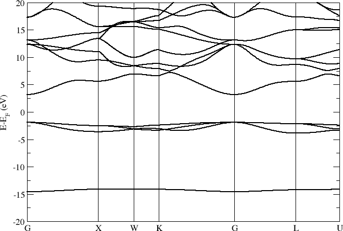

NaCl¶
Phonon band structure for NaCl (see Examples/Phonon_bands/NaCl).
Lattice parameter a = 5.64 Å and a 6x6x6 repetition of the primitive cell. Main computational settings:
PAO.EnergyShift 0.01 Ry
PAO.BasisSize DZP
XC.functional GGA
XC.authors PBE
MeshCutoff 500. Ry
MD.FCDispl 0.02 Ang
Electrons¶
Band structure
{kind=link}
Desity of states
Density of states (DOS) sampled on a grid of 64x64x64 k-points:

Phonons¶
Band structure
Phonon band structure computed with different force cutoff radii r = 5.0, 7.0, 9.0 Å:


Desity of states
Density of states (DOS) sampled on a grid of 64x64x64 k-points:

Reference results¶
One important difference is the modes at Gamma. With Inelastica the optical modes are found to be degenerate. The missing LO-TO splitting is likely the effect of macroscopic polarization in polar materials. The long-range electrostatic interactions are not corrected in the current code revisions.

Raunio, G. & Rolandson, S. Lattice Dynamics of NaCl, KCl, RbCl, and RbF, Phys. Rev. B 2, 2098 (1970).